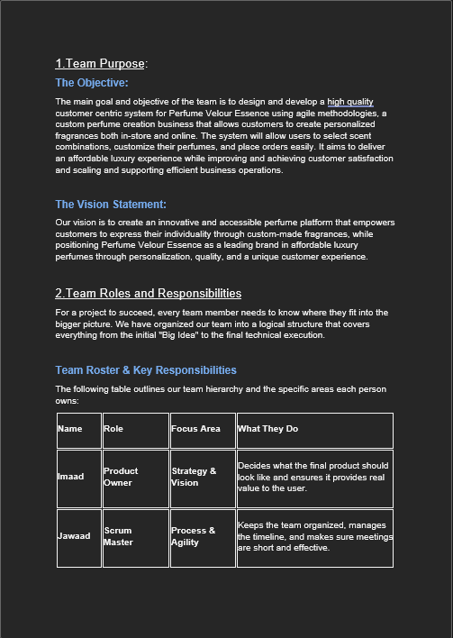
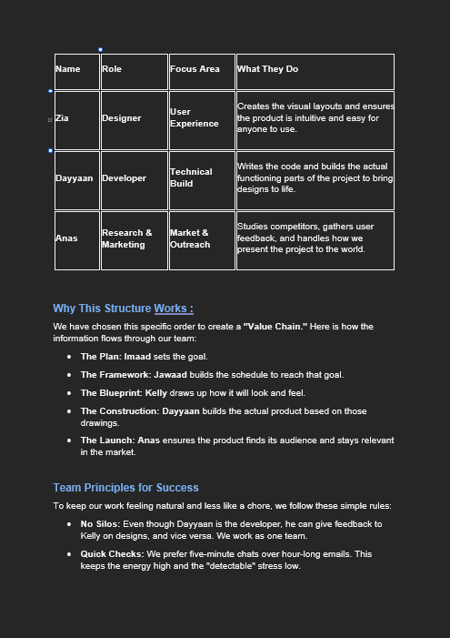
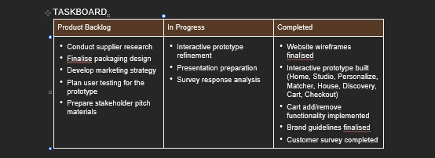
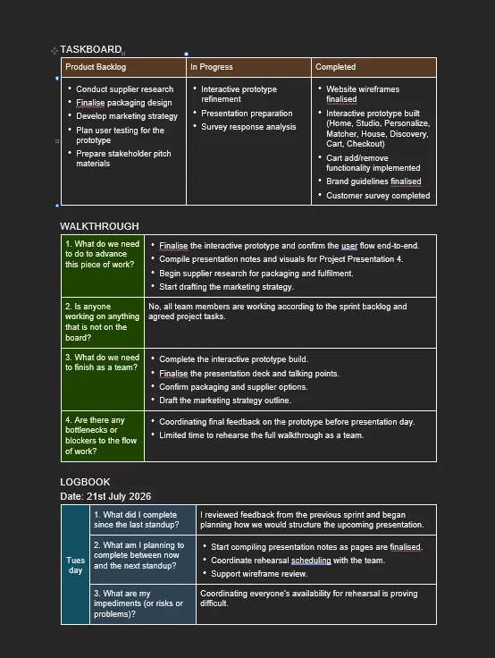
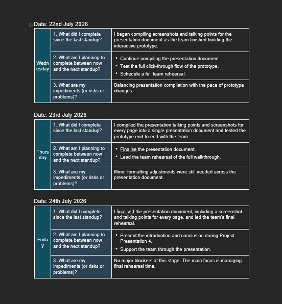

Ahmad Zia Hasan Modarrisi
Application Developer & Team Leader
Building robust system architectures and clean workflows. Grounded in event leadership and trained in software development at Cape Peninsula University of Technology.
const developer = {
name: "Ahmad Zia Hasan Modarrisi",
education: "CPUT ICT (App Development)",
skills: ["Java", "Python", "SQL", "JS"],
leadership: true,
workReady: true
};
function getStatus() {
return "Internship Ready 🚀";
}
Explore my portfolio
Choose a semester, then use the section tabs to move through it.
About Me
Bridging academic principles and industrial application
Ahmad Zia Hasan Modarrisi
ICT Student | CPUT Application Development
I am currently pursuing a Diploma in Information and Communication Technology, specializing in Application Development at the Cape Peninsula University of Technology. My passion lies in constructing efficient, scaleable backends and clean user interfaces.
What makes my profile unique is my extensive professional background in event leadership. Serving as a Floor and Team Lead, I have mastered project coordination, task delegation, team mentorship, and critical problem-solving under extreme operational constraints. I am eager to apply these valuable leadership and communication skills directly to the modern software engineering lifecycle.
Academic & Career Goals
- Complete internship requirements in the software engineering sector to deliver high-quality code.
- Master advanced systems architecture, Cloud Computing, and DevOps pipelines.
- Contribute actively to collaborative, cross-functional engineering teams.
Curriculum Vitae
Fully coded structural history and technical skill matrix
Professional Experience
Floor and Team Lead
2024 - 2026Events and Operations
Coordinated operational logistics and managed ground teams in high-stress, fast-paced event scenarios.
- Coordinated complex operational workflows for large-scale events, securing safety, efficiency, and high quality.
- Led, mentored, and supervised diverse teams, optimizing output through strategic delegation and constructive feedback.
- Identified and resolved real-time operational bottlenecks under extreme pressure, maintaining professional service quality.
- Upheld rigorous safety protocols and quality guidelines across multiple high-profile venues.
Education & Academic Track
Diploma in Information & Communication Technology
2023 - PresentCape Peninsula University of Technology (CPUT)
Specializing in Application Development. Key courses include Object-Oriented Programming (Java/Python), Relational Database Design, System Analysis and Design, and Technical Presentations.
National Senior Certificate (Matric Bachelors Pass)
2018 - 2022Al-Azhar High School
Passed with Bachelor admissions, showing strong aptitude in analytical and critical thinking.
Professional Reference
"Ahmad has demonstrated excellent team management, crisis response, and communication skills while serving as a Floor and Team Lead."
Imaad
Coordinator, Legacy Events & Hire
📞 +27 76 083 4258
Mock Interview Video
Evaluating communications and behavioral readiness for industry roles
Mock Interview Simulation Recording
Mock Interview Insights
Self-Evaluation & Presentation Strategy
Bridging Roles
Articulated how floor leadership translates to handling software team conflicts, managing project deadlines, and resolving software system crashes.
Communication Framework
Structured behavioral answers around specific events and technical projects, using the industry-preferred STAR method for logical clarity.
Growth & Critique
Analyzing my own posture and vocal pitch has given me a concrete checklist to refine before physical recruiter interviews.
This video represents formal evidence of work readiness presentation under high academic assessment rules at CPUT.
STAR Method Reflections
Structured evaluation of my learning, technical development, and pipeline building
Coded CV & Reflections using Markdown
Situation
As part of the PRP370S syllabus, I had to create a portfolio of evidence. Although familiar with typing code, I had never written extensive, professional documentation using plain-text Markdown tags, tables, and block indicators.
Task
I had to convert my entire physical PDF resume into a fully parseable, clean, and semantic Markdown structure (`CV.md`) that fits standard repository layouts and renders perfectly in online git ecosystems.
Action
I mastered the GitHub Flavored Markdown (GFM) standard. I incorporated structured tables to hold languages and tooling, blockquotes to highlight references, and lists to map job bullet points. I repeatedly previewed the results to adjust spacing.
Result
Created a highly organized GFM structure. It serves as a readable, human-centric file inside my git environment, proving that I can construct developer documentation that adheres to the industry standards.
Mock Interview Video Simulation
Situation
Transitioning into the ICT industry requires clear communication, composure under pressure, and the capacity to verbally articulate technical knowledge during aggressive recruiting pipelines.
Task
I needed to perform, capture, and self-review a professional mock interview video (`Interview.mp4`) that successfully communicates my capabilities and maps my operational team-leadership experience directly into software team roles.
Action
I prepared technical frameworks and structured answers to key junior questions. I set up a dedicated recording area with good lighting, adjusted webcam angles, and recorded the interview. I paid close attention to speech velocity and technical jargon.
Result
Constructed a solid MP4 assessment file (`Interview.mp4`). This self-review highlighted key elements of my physical delivery to refine, while showing how floor operations experience supports analytical software development environments.
Deployment on GitHub Pages
Situation
Digital portfolios must be instantly accessible to academic assessors and potential employers. Hosting projects on local hard drives or simple static repositories drastically restricts visibility and engagement.
Task
Deploy the digital portfolio to the live web using GitHub Pages, transforming a static file repository into an interactive, lightning-fast static webpage.
Action
Designed a fully responsive CSS web client, structuring files cleanly. I pushed files to GitHub, set up the Pages continuous deployment pipeline under repository settings to target the `main` branch, and fixed relative asset paths for video/PDF references.
Result
The portfolio is live. I gained experience in basic Git pipelines and cloud hosting. By deploying the files, my academic submission is perfectly public and immediately accessible to employers worldwide.
Agile Team Charter
How our team agreed to work together on the custom perfume project
An Agile team charter is a living, co-created social contract that defines a team's shared purpose, core values, working agreements, and operational boundaries to reduce friction and align daily execution.
Evidence


The full charter also covers team values, agile principles, the communication plan, SMART goals and six sprint milestones.
Download the full charter (.docx)Reflection
Reflection: Agile Team Charter
Situation
Our five-person team was starting the Semester 2 project, building a system for Perfume Velour Essence, a custom perfume business. Before any design or code began we needed to agree who did what and how we would work together.
Task
As the team's Designer, understand where my work fitted in the project, and help agree a charter covering our purpose, roles, values, communication and milestones.
Action
The charter set out our objective and vision and arranged the roles as a value chain: Imaad sets the goal, Jawaad builds the schedule, I draw up how the product will look and feel, Dayyaan builds it, and Anas takes it to market. My role was Designer, focused on user experience: creating the visual layouts and making sure the product is intuitive for anyone to use. The charter gave design tasks a clear owner, while still letting Dayyaan give design feedback under our "No Silos" principle. My main milestone was Sprint 3: finalise the brand identity, logo and overall aesthetic, and complete the wireframes and UX layouts so development could start with a clear blueprint.
Result
The charter made it clear that my work was the input for Dayyaan's build, so late design work would block development. That pushed me to treat the Sprint 3 deliverables as dependencies for the team. My logbook also showed that team availability was hard to coordinate near the deadline, so next time I would agree rehearsal times in the communication plan early.
User Stories and Tasks
Turning the custom perfume idea into customer and admin needs
A user story is a short, simple description of a software feature written from the end-user's perspective. The breakdown is then divided into tasks.
Evidence


Reflection
Reflection: User Stories and Tasks
Situation
We had an idea for a custom perfume platform but no clear list of what it had to do, for whom, or why. As the Designer I needed to know what users should be able to do on each screen.
Task
Capture the requirements as user stories in the "As a… I want… so that…" format, group them into epics, and use them to shape the layouts and the tasks the team worked on.
Action
As a team we wrote stories across six epics: Custom Scent Builder, Label & Bottle Personalization, Checkout & Payments, Account & Order Tracking, Admin & Operations, and Marketing & Engagement. The customer stories, such as selecting scent notes and adjusting intensity, seeing a live preview of the blend, designing a custom label and seeing the price update at checkout, told me what each screen had to show. The work was tracked as tasks on our Trello board, as day cards with due dates and checklists.
Result
The stories gave the wireframes and prototype a clear structure. The prototype pages we built (Home, Studio, Personalize, Matcher, House, Discovery, Cart and Checkout) follow the customer-facing epics. Writing the "so that" part taught me to design around the value a feature gives the user, not just the feature.
Product Backlog
The prioritised list of work still needed for the product
A product backlog is a prioritized list of all required work, features, bug fixes, and improvements needed for a product.
Evidence

Reflection
Reflection: Product Backlog
Situation
Beyond the prototype itself, the project still had supplier, packaging, marketing and testing work that nobody was tracking in one place.
Task
Keep a single backlog of everything outstanding so the team always knew what could be picked up next, including the design work that still needed doing.
Action
We held that outstanding work in the Product Backlog column of our taskboard: conduct supplier research, finalise packaging design, develop the marketing strategy, plan user testing for the prototype, and prepare stakeholder pitch materials. For me, finalising the packaging design and planning user testing of the prototype were the design-related items. As work started, items moved out of the backlog into In Progress and then Completed.
Result
The backlog kept the non-coding work visible next to the prototype work. It showed me that design does not end when the layouts are done: packaging and user testing were still waiting. Our list was not ranked or estimated, so next time I would add a priority order and effort estimates to decide what comes first.
Sprint Backlog
The work committed to for the current sprint and how it progressed
A Sprint Backlog is a real-time, actionable plan created by and for developers that outlines the specific work needed to achieve the sprint goal.
Evidence
Reflection
Reflection: Sprint Backlog
Situation
The project ran over several sprints with fixed dates, so the team had to be clear about what would be finished in each sprint and what would not.
Task
Plan my design work into the sprint on our Trello board, and keep it up to date so the team could see what was done, in progress and still to do.
Action
We broke each sprint into day cards on Trello. Each card has a sprint label, a due date and a checklist. My design work sat in Sprint 3, with day cards such as "Sprint 3 – Day 3: Design packaging concepts" and "Sprint 3 – Day 4: Finalise branding guidelines". The board has three lists: Product Backlog, In Progress and Completed, and finished Sprint 1 and Sprint 2 cards show fully ticked checklists.
Result
The board made each sprint's progress visible at a glance, and the checklists gave us a simple definition of done for every day card. I learned to break design work into day-sized pieces so Dayyaan could see what was coming, and that a sprint backlog is only useful if it is updated as work moves.
Agile Logbook
Daily stand-up entries from the week leading up to Project Presentation 4
An agile logbook is a tracking tool used by project managers and development teams to record daily stand-ups, sprint plans, and retrospective notes.
Evidence


Reflection
Reflection: Agile Logbook
Situation
In the final week before Project Presentation 4, the team needed to stay aligned while the prototype was still changing.
Task
Record a daily stand-up entry covering what I completed, what I planned next, and what was blocking me.
Action
Each day I answered the three stand-up questions. On 21 July I reviewed feedback and planned the presentation structure. On 22 July I began compiling screenshots and talking points. On 23 July I finished them for every page and tested the prototype end to end. On 24 July I finalised the presentation document and led the final rehearsal.
Result
The impediments I logged moved from difficult rehearsal availability and formatting fixes on 21 to 23 July to "no major blockers" on 24 July. Writing them down every day made problems visible early enough to deal with them before the presentation.